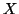

Next: Output
Up: Elementary Stages Box
Previous: Doing a 2D scan
Contents
Parameters: number of sequences
Default: none
Example: No_of_sequences
100
This parameter defines the number of times
each sequence is to be repeated. After that, the elementary sequence,
consisiting of elementary passages (i.e. stages) follows in the same
way as described in section
9.4.2.
The scan sub-box is terminated with the keyword
==={end_scan}===
For instance, the 4-stage/passage scan
structure to be repeated 10 times along the

direction is given
by the following scan sub-box:
==={begin_scan}===
No_of_sequences 10
_{begin_stage}_
Finish{how,time} time 0.01
Velocity{Vx,Vy} 0.0 1.0e-9
ADC{T/F,freq} T -440.0
_{begin_stage}_
Finish{how,time} time 0.001
Velocity{Vx,Vy} 1.0e-9 0.0
ADC{T/F,freq} T -440.0
_{begin_stage}_
Finish{how,time} time 0.01
Velocity{Vx,Vy} 0.0 -1.0e-9
ADC{T/F,freq} T -440.0
_{begin_stage}_
Finish{how,time} time 0.001
Velocity{Vx,Vy} 1.0e-9 0.0
ADC{T/F,freq} T -440.0
==={end_scan}===
Here  is set to -440 Hz during the whole scan.
is set to -440 Hz during the whole scan.
Next: Output
Up: Elementary Stages Box
Previous: Doing a 2D scan
Contents
Lev Kantorovich
2005-08-04